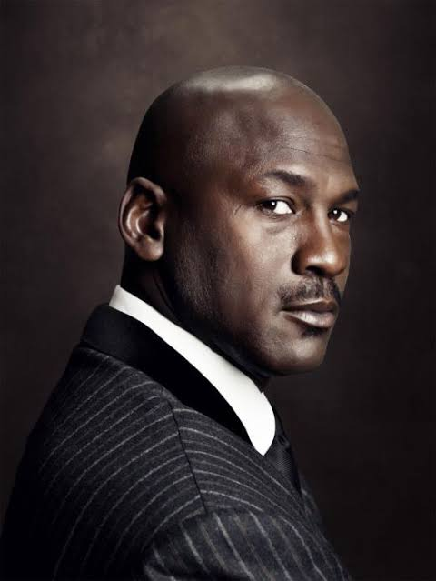
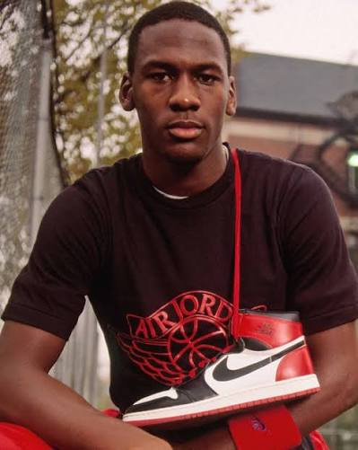
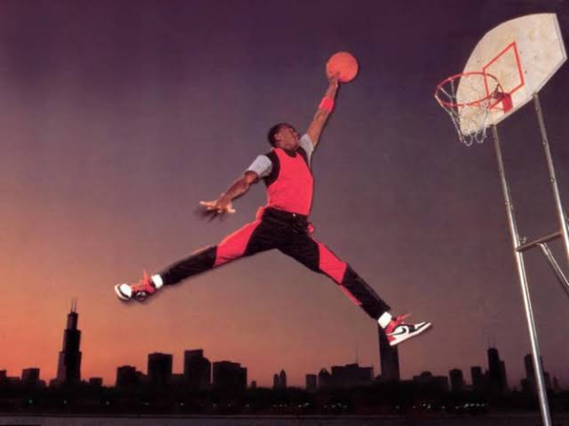
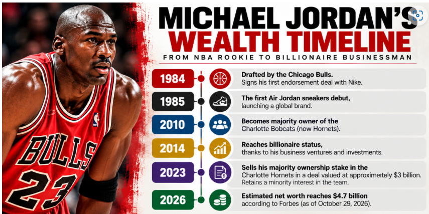

HOMME D'AFFAIRE
Michael Jordan est un homme d'affaires milliardaire américain, dont la fortune est estimée à 4,7 milliards de dollars en 2026.
Il est propriétaire majoritaire de l'équipe de basketball des Charlotte Hornets, et a également investi dans d'autres entreprises, telles que la marque de vêtements et de chaussures Air Jordan, qui est devenue une marque emblématique dans le monde entier.


PRINCIPAUX PILIERS DE SA REUSSITE FINANCIERE
• Nike et Jordan Brand : Depuis 1984, son partenariat avec Nike a révolutionné le marketing sportif. En 1997, la création de sa propre ligne Jordan Brand (avec le logo Jumpman) lui a permis de percevoir d'importantes royalties et de continuer à générer des centaines de millions de dollars par an.
• Franchise NBA (Charlotte Hornets) : Devenu propriétaire des Charlotte Bobcats/Hornets (acheté 275 millions de dollars en 2010), il a cédé sa participation majoritaire en 2023 pour une valorisation très élevée.
• Autres investissements sportifs : Il s'est également impliqué dans le sport automobile, notamment en NASCAR et en superbike.
